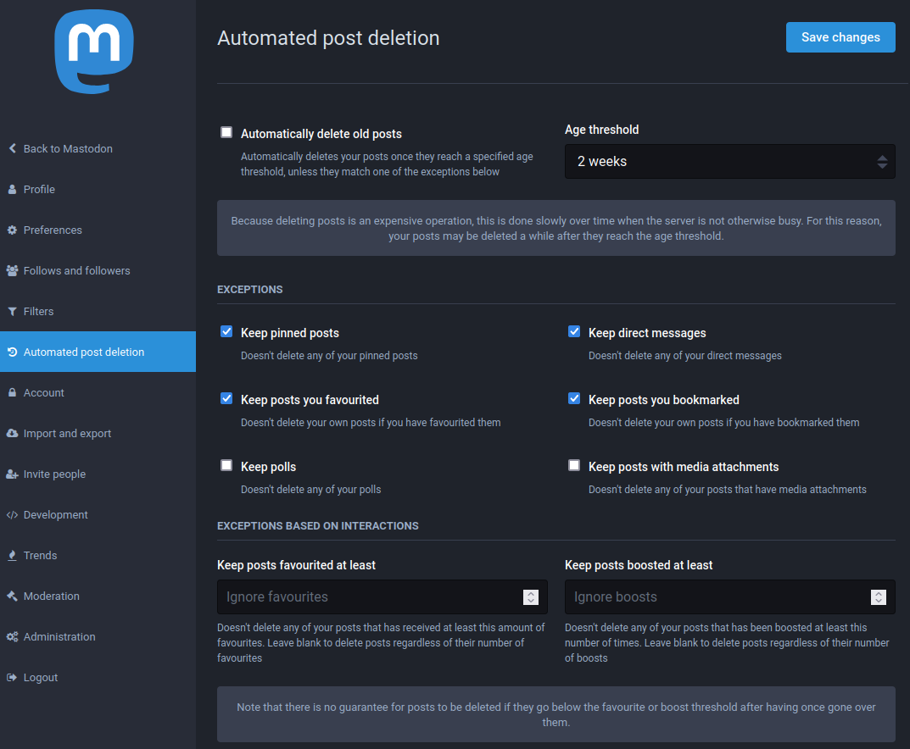

4 Staying safe
4.1 Protecting yourself and others
4.1.1 Set filters
If you want to protect yourself from a specific subject, you have the option to set-up filters.
Go to Preferences > Filters > Add new filter.
There you can choose a keyword or phrase to exclude from ‘Home and lists’, ‘Notifications’, ‘Public timelines’, ‘Conversations’, and/or ‘Profiles’,
4.1.2 Block or mute
To block or mute a user, click on the Menu button (three dots) on their toot or profile and select mute @... or block @....
Blocking a user will stop any possible interaction with you. The blocked user will not be notified and will be removed of your followers. Blocking stops the blocked user to see your toots when they are logged-in. Nonetheless, be aware that they can bypass this last functionality by seing your profile in a non-logged view, or by using another account.
Muting a user will only avoid you to see their toots unless they tag you. They will still be able to see yours and interact with them. Muted users don’t have a way to know they have been muted.
4.1.3 Report toots or users
In a rule-breaking situation or if you consider a behavior or toot to be unacceptable, do not hesitate to report a toot or user.
Click on the Menu button (three dots) of the toot or profile and select report @...
This action will open a reporting window where you can can choose between the following options:
- I don’t like it
- It’s spam
- It violates server rules
- It’s something else
Then you can select none or several toots of the user related to the issue that will be added to the report.
Please ensure you add an additional comment at the end of your report to help moderators quickly see the reason of the report, even if it seems obvious to you.
Moderators will be notified and will take action on your report as soon as possible. Please be patient as the team behind do this on their own time.
No notification is sent to the other user that you reported them or on of their toot. Reports should be used as often as necessary to ensure the
4.2 Account Security and privacy
4.2.1 Two-Factor authentication (2FA)
This mechanism improves the security of your account by requiring a code from another device.
To enable 2FA, go to Preferences > Account > Two-factor Auth and follow the instructions.
4.2.2 Toot privacy levels
Four privacy levels exists for your toots: * Public * Unlisted, not visible on timeline * Private, visible only by followers * Direct, visible only by mentioned users
In direct messages, even if not initially in the conversation a tagged user will be added as a direct recipient of the conversation. Be mindful of this scenario.
4.2.3 Privacy settings
Highlight of some privacy related parameters and where to find them.
- Manually control who can follow you by approving follow requests
Preferences > Profile > Appearance > [ ] Require follow requests - Hide your follows and followers
Preferences > Profile > Appearance > [ ] Hide your social graph - Avoid being included in search engine
Preferences > Preferences > Other > [ ] Opt-out of search engine indexing - Posting privacy default
Preferences > Preferences > Other > Posting privacy, Public, Unlisted or Followers-only - Display or not the application used to post
Preferences > Preferences > Other > [ ] Disclose application used to send posts
4.2.4 Right to oblivion
Posts can be made to disapear after a certain age threshold (of the post, not yours!).
You can go to Preferences > Automated post deletion where you will find a set of granular settings on when and which posts will be deleted.
